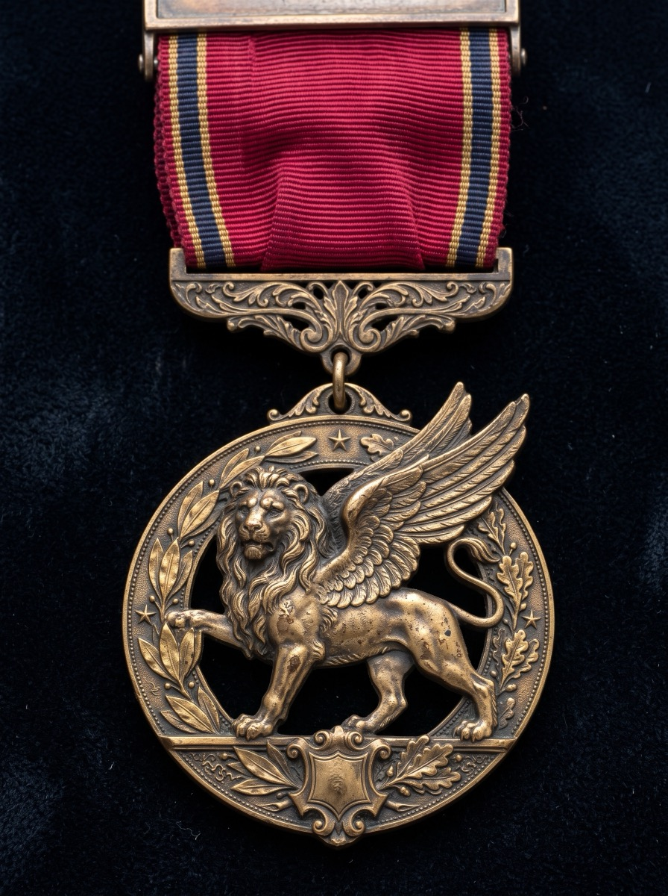

CoreXP
XP Tracker
Every badge. Every requirement. Every point.



Name
Mentor
Started
Age
Every badge. Every requirement. Every point.

Every badge requirement is worth XP. When you finish one, check its box, write the date, and have your mentor initial it. That XP is now yours.
Each badge also has three optional Epic Quests: big stretch challenges you can earn once, any time.
| Size | XP | What it looks like |
|---|---|---|
| Quick | 2 | One sitting: name, learn, talk about, or share something |
| Task | 5 | Make, write, practice, or roleplay, or repeat a habit 2–5 days |
| Project | 10 | Plan and complete, teach, lead, interview, present, or a ~1 week habit |
| Challenge | 20 | A 2–4 week habit, or a major project or certification |
| Marathon | 40 | A habit kept for 2+ months |
| ★ Challenger | 15 XP |
|---|---|
| ★★ Champion | 25 XP |
| ★★★ Legend | 40 XP |
Check a box when a level is signed off. Write each badge's XP total as it grows. A level patch takes every required badge at that level plus 6 electives (at least 2 from Creativity & Innovation).
| Badge | Exp | Bld | Mas | Epic | XP |
|---|---|---|---|---|---|
| 1. Character & Spirituality | |||||
| Kindness Agent | / 202 | ||||
| Pathfinder | / 169 | ||||
| Spiritual Seeker (LDS Focus) | / 205 | ||||
| 2. Health & Physical Wellness | |||||
| Clean & Capable | / 191 | ||||
| First Aid Hero | / 163 | ||||
| Fit Force | / 196 | ||||
| Fuel Master | / 160 | ||||
| Rest & Recharge Elective | / 168 | ||||
| 3. Emotional & Mental Resilience | |||||
| Bounce Back | / 160 | ||||
| Calm Commander | / 166 | ||||
| Mind Master Elective | / 165 | ||||
| Self-Reflector | / 170 | ||||
| Stillness Scout Elective | / 174 | ||||
| 4. Relationships & Social Skills | |||||
| Empathy & Friendship | / 179 | ||||
| Good Communicator | / 155 | ||||
| Team & Conflict Skills | / 163 | ||||
| 5. Practical Life Skills | |||||
| Fix-It Scout Elective | / 150 | ||||
| Home Helper | / 161 | ||||
| Money Smart | / 166 | ||||
| Personal Manager | / 194 | ||||
| Safety Scout | / 145 | ||||
| 6. Creativity & Innovation | |||||
| Creative Maker Elective | / 176 | ||||
| Digital Creator Elective | / 171 | ||||
| Idea Builder Elective | / 194 | ||||
| Music Explorer Elective | / 217 | ||||
| Storyteller Elective | / 173 | ||||
| 7. Nature & Citizenship | |||||
| Animal Ally Elective | / 176 | ||||
| Civic Explorer – Local | / 163 | ||||
| Civic Explorer – National | / 153 | ||||
| Civic Explorer – State | / 158 | ||||
| Civic Explorer – World | / 153 | ||||
| Community Helper | / 189 | ||||
| Earth Steward Elective | / 179 | ||||
| Outdoor Adventurer Elective | / 166 | ||||
| Grand total | / 5870 | ||||
3 badges · 576 XP available
| ★☆☆ Explorer | 22 | Date | Mentor | ||
|---|---|---|---|---|---|
| 1 | Do at least 5 acts of kindness in one week. | 10 | |||
| 2 | Make and give a handwritten note or drawing. | 5 | |||
| 3 | Describe a kind act you witnessed. | 2 | |||
| 4 | Make a 'Kindness Jar' with ideas for future acts. | 5 | |||
| ★★☆ Builder | 45 | Date | Mentor | ||
| 1 | Plan a way to brighten someone’s day. | 10 | |||
| 2 | Serve someone without being asked and don’t tell them. | 5 | |||
| 3 | Identify and plan a way to help someone who may feel left out. | 10 | |||
| 4 | Read or watch a story about compassion and share your thoughts. | 5 | |||
| 5 | Create a small kindness challenge and invite others. | 10 | |||
| 6 | Write a thank-you letter to someone who's helped you. | 5 | |||
| ★★★ Master | 55 | Date | Mentor | ||
| 1 | Plan and complete a 2-hour kindness project. | 20 | |||
| 2 | Interview someone who serves others and reflect on it. | 10 | |||
| 3 | Lead a kindness week challenge with younger kids. | 20 | |||
| 4 | Reflect on what you learned about yourself through service. | 5 | |||
| ⚡ Epic Quests | 80 | Date | Mentor | ||
| ★ | Challenger: Log 25 acts of kindness. | 15 | |||
| ★★ | Champion: Do a secret act of kindness for every person in your family without getting caught. | 25 | |||
| ★★★ | Legend: Organize a service day for your neighborhood or ward that involves at least 10 people. | 40 | |||
| ★☆☆ Explorer | 14 | Date | Mentor | ||
|---|---|---|---|---|---|
| 1 | Identify 3 core personal or family values. | 2 | |||
| 2 | Write or tell someone why each value is important to you. | 5 | |||
| 3 | Share a time when you saw someone live one of those values. | 2 | |||
| 4 | Memorize a quote or scripture that represents one of your chosen values. | 5 | |||
| ★★☆ Builder | 35 | Date | Mentor | ||
| 1 | Keep a 7-day journal reflecting on how you lived your values. | 10 | |||
| 2 | Identify a time you were tempted to go against a value. What did you do? | 5 | |||
| 3 | Interview a parent or mentor about their values. | 10 | |||
| 4 | Discuss values shown or violated in a movie or story. | 5 | |||
| 5 | Create a symbol, art, or written expression of a value. | 5 | |||
| ★★★ Master | 40 | Date | Mentor | ||
| 1 | Choose one core value and live it deeply for 30 days. | 20 | |||
| 2 | Lead a discussion or presentation about values. | 10 | |||
| 3 | Reflect on a decision or relationship shaped by your values. | 5 | |||
| 4 | Apply a value to a real-world issue and explain your response. | 5 | |||
| ⚡ Epic Quests | 80 | Date | Mentor | ||
| ★ | Challenger: Memorize 5 quotes or scriptures, one for each of 5 different values. | 15 | |||
| ★★ | Champion: Write a personal code (your top values and what they mean to you) and display it in your room. | 25 | |||
| ★★★ | Legend: Live by your personal code for 90 days, with a check-in with your mentor every week. | 40 | |||
| ★☆☆ Explorer | 20 | Date | Mentor | ||
|---|---|---|---|---|---|
| 1 | Pray morning and night for 3 days in a row. | 5 | |||
| 2 | Read scriptures with family or alone for 3 days. | 5 | |||
| 3 | Memorize and recite one Article of Faith. | 5 | |||
| 4 | Attend sacrament meeting and share something you learned or felt. | 5 | |||
| ★★☆ Builder | 45 | Date | Mentor | ||
| 1 | Study a scripture hero and share what you admire. | 5 | |||
| 2 | Keep a spiritual journal for 7 days. | 10 | |||
| 3 | Choose a Christlike attribute and work on it for a week. | 10 | |||
| 4 | Memorize three Articles of Faith and explain them. | 10 | |||
| 5 | Watch or listen to a General Conference talk and discuss it. | 5 | |||
| 6 | Complete one family history task (add photo/story or interview elder). | 5 | |||
| ★★★ Master | 60 | Date | Mentor | ||
| 1 | Create and follow a 30-day spiritual habit plan. | 20 | |||
| 2 | Give a talk or testimony in a family or church setting. | 10 | |||
| 3 | Create a gospel study project on a chosen topic. | 10 | |||
| 4 | Attend the temple or prepare family names with a parent. | 10 | |||
| 5 | Lead or plan a family home evening lesson. | 10 | |||
| ⚡ Epic Quests | 80 | Date | Mentor | ||
| ★ | Challenger: Memorize all 13 Articles of Faith. | 15 | |||
| ★★ | Champion: Find and prepare the names of 5 ancestors for temple ordinances, or index 200 FamilySearch records. | 25 | |||
| ★★★ | Legend: Read the entire Book of Mormon. | 40 | |||
5 badges · 878 XP available
| ★☆☆ Explorer | 17 | Date | Mentor | ||
|---|---|---|---|---|---|
| 1 | Brush your teeth and floss daily for 5 days in a row. | 5 | |||
| 2 | Learn and demonstrate proper handwashing. | 2 | |||
| 3 | Practice showering or bathing regularly (at least 3 times/week). | 5 | |||
| 4 | Keep your bedroom clean for 3 days in a row. | 5 | |||
| ★★☆ Builder | 34 | Date | Mentor | ||
| 1 | Create a morning and evening hygiene routine and follow it for 7 days. | 10 | |||
| 2 | Learn how to properly clip fingernails and toenails. | 2 | |||
| 3 | Sort, wash, and put away your own laundry at least twice. | 5 | |||
| 4 | Keep your bedroom clean and organized for 7 days. | 10 | |||
| 5 | Talk with a parent about body changes and hygiene needs as you grow. | 2 | |||
| 6 | Help clean a shared space in your home (bathroom, kitchen, etc.). | 5 | |||
| ★★★ Master | 60 | Date | Mentor | ||
| 1 | Follow your hygiene routine consistently for 30 days. | 20 | |||
| 2 | Teach a sibling or friend how to care for their hygiene or space. | 10 | |||
| 3 | Research and explain how hygiene affects self-confidence and health. | 5 | |||
| 4 | Create a hygiene checklist for yourself or others to use. | 5 | |||
| 5 | Keep your room and one shared space clean and organized for 2 weeks. | 20 | |||
| ⚡ Epic Quests | 80 | Date | Mentor | ||
| ★ | Challenger: Do your own laundry start to finish (wash, dry, fold, put away) for 4 weeks in a row. | 15 | |||
| ★★ | Champion: Brush twice a day and floss daily for 60 days in a row. | 25 | |||
| ★★★ | Legend: Keep your room ready for a surprise inspection for 90 days, passing at least 10 random checks. | 40 | |||
| ★☆☆ Explorer | 11 | Date | Mentor | ||
|---|---|---|---|---|---|
| 1 | Learn how and when to call 911 (and practice saying your full name/address). | 2 | |||
| 2 | Identify items in a basic first aid kit and what they’re used for. | 2 | |||
| 3 | Watch or read about how to help with minor cuts, scrapes, and burns. | 2 | |||
| 4 | Roleplay helping someone who is hurt or sick at home or on the playground. | 5 | |||
| ★★☆ Builder | 27 | Date | Mentor | ||
| 1 | Learn and demonstrate how to clean and bandage a wound. | 5 | |||
| 2 | Learn what to do for nosebleeds, burns, and insect bites. | 5 | |||
| 3 | Practice how to stay calm and help someone having a minor emergency. | 5 | |||
| 4 | Understand the basics of when not to move someone who is injured. | 2 | |||
| 5 | Create or help update your family’s first aid kit. | 5 | |||
| 6 | Learn signs of concussion, dehydration, or heat exhaustion. | 5 | |||
| ★★★ Master | 45 | Date | Mentor | ||
| 1 | Teach a younger sibling or friend three basic first aid tips. | 10 | |||
| 2 | Create a first aid cheat sheet or poster and share it with your family or group. | 5 | |||
| 3 | Roleplay responding to a scenario (e.g., fall, bee sting, head bump) and walk through what to do. | 5 | |||
| 4 | Learn how to help someone who is choking and explain the steps out loud or in a skit. | 5 | |||
| 5 | Earn a CPR certification through a class (in-person or online), or attend a parent-approved youth CPR training. | 20 | |||
| ⚡ Epic Quests | 80 | Date | Mentor | ||
| ★ | Challenger: Build a portable first aid kit for a backpack or car and explain every item in it. | 15 | |||
| ★★ | Champion: Pass a month of surprise drills: your mentor stages 5 unannounced pretend emergencies and you respond correctly to all of them. | 25 | |||
| ★★★ | Legend: Complete a Red Cross Babysitter's Training, Wilderness First Aid, or full First Aid/CPR/AED course. | 40 | |||
| ★☆☆ Explorer | 14 | Date | Mentor | ||
|---|---|---|---|---|---|
| 1 | Try 3 different types of movement (e.g., running, dancing, yoga, hiking). | 5 | |||
| 2 | Do 10–15 minutes of physical activity for 5 days in one week. | 5 | |||
| 3 | Learn and demonstrate a simple warm-up and cool-down. | 2 | |||
| 4 | Talk about why exercise is good for your heart, lungs, and muscles. | 2 | |||
| ★★☆ Builder | 52 | Date | Mentor | ||
| 1 | Set and track a fitness goal for 2 weeks (e.g., number of steps, active minutes). | 20 | |||
| 2 | Learn and perform a basic strength circuit (e.g., squats, push-ups, planks). | 5 | |||
| 3 | Try a new sport or activity you haven’t done before. | 5 | |||
| 4 | Learn how to monitor your heart rate during exercise and what it means. | 2 | |||
| 5 | Keep a log of your physical activity for 7 days and reflect on how you felt. | 10 | |||
| 6 | Teach a family member or friend a short fitness routine. | 10 | |||
| ★★★ Master | 50 | Date | Mentor | ||
| 1 | Set a 30-day fitness challenge and complete it (with accountability). | 20 | |||
| 2 | Research and present how fitness helps prevent long-term health problems. | 10 | |||
| 3 | Create and lead a group workout (siblings, family, or friends). | 10 | |||
| 4 | Learn and explain basic injury prevention and recovery techniques (stretching, hydration, rest). | 5 | |||
| 5 | Reflect in writing or video: What have you learned about your body and your mindset through this badge? | 5 | |||
| ⚡ Epic Quests | 80 | Date | Mentor | ||
| ★ | Challenger: Do 3 pull-ups. | 15 | |||
| ★★ | Champion: Hold a plank for 2 minutes. | 25 | |||
| ★★★ | Legend: Run a 5K. | 40 | |||
| ★☆☆ Explorer | 14 | Date | Mentor | ||
|---|---|---|---|---|---|
| 1 | Identify the 5 basic food groups and give an example of each. | 2 | |||
| 2 | Keep a food log for 2 days—write or draw what you eat and drink. | 5 | |||
| 3 | Learn why water is important and track your hydration for one day. | 2 | |||
| 4 | Help prepare a healthy snack for yourself or your family. | 5 | |||
| ★★☆ Builder | 31 | Date | Mentor | ||
| 1 | Learn to read a nutrition label and compare two similar foods. | 2 | |||
| 2 | Plan and help prepare a healthy breakfast, lunch, and dinner. | 10 | |||
| 3 | Set a goal to eat at least 3 fruits or vegetables per day for 7 days. | 10 | |||
| 4 | Learn about sugar and how to spot hidden sugars in foods. | 2 | |||
| 5 | Talk with a parent about balanced meals and portion sizes. | 2 | |||
| 6 | Replace a common snack with a healthier option for 5 days. | 5 | |||
| ★★★ Master | 35 | Date | Mentor | ||
| 1 | Create a 1-week meal plan that includes all food groups and healthy snacks. | 10 | |||
| 2 | Teach someone younger than you about making healthy food choices. | 10 | |||
| 3 | Research and explain how nutrition affects your energy, sleep, or mood. | 5 | |||
| 4 | Try cooking or baking a new healthy recipe from scratch. | 5 | |||
| 5 | Reflect in writing or video: What have you learned about your eating habits and how food affects you? | 5 | |||
| ⚡ Epic Quests | 80 | Date | Mentor | ||
| ★ | Challenger: Cook 3 full meals from scratch. | 15 | |||
| ★★ | Champion: Drink no soda or sugary drinks for 30 days. | 25 | |||
| ★★★ | Legend: Plan, budget, shop for, and cook the family's dinners for a full week. | 40 | |||
| ★☆☆ Explorer | 14 | Date | Mentor | ||
|---|---|---|---|---|---|
| 1 | Create a bedtime routine and follow it for 3 nights in a row. | 5 | |||
| 2 | Learn and discuss why sleep is important for your brain and body. | 2 | |||
| 3 | Track your sleep for 3 days (what time you go to bed and wake up). | 5 | |||
| 4 | Try a calm-down activity before bed (e.g., reading, quiet music, stretching). | 2 | |||
| ★★☆ Builder | 24 | Date | Mentor | ||
| 1 | Keep a consistent bedtime and wake-up time for 5 days in a row. | 5 | |||
| 2 | Go one full day without screens 30 minutes before bed. | 2 | |||
| 3 | Learn how caffeine, sugar, and screens can affect sleep. | 2 | |||
| 4 | Design a sleep-friendly bedroom environment (cool, dark, quiet). | 5 | |||
| 5 | Practice two different relaxation techniques (e.g., breathing, journaling, stretching). | 5 | |||
| 6 | Track your energy and mood over 5 days and reflect on how rest impacts them. | 5 | |||
| ★★★ Master | 50 | Date | Mentor | ||
| 1 | Follow your customized rest plan for 14 days (bedtime, calming habits, screen limits). | 20 | |||
| 2 | Teach a sibling or friend how to build a healthy sleep routine. | 10 | |||
| 3 | Research and share how rest affects focus, memory, and health. | 5 | |||
| 4 | Write or record a reflection: What helps you feel rested? What gets in the way? | 5 | |||
| 5 | Choose a day to completely unplug and rest (no screens except for emergencies). Share what you did instead. | 10 | |||
| ⚡ Epic Quests | 80 | Date | Mentor | ||
| ★ | Challenger: Have screen-free evenings (no screens after dinner) for 7 days in a row. | 15 | |||
| ★★ | Champion: Get to bed within 15 minutes of your bedtime for 30 nights in a row. | 25 | |||
| ★★★ | Legend: Keep all devices out of your bedroom overnight for 90 days. | 40 | |||
5 badges · 835 XP available
| ★☆☆ Explorer | 11 | Date | Mentor | ||
|---|---|---|---|---|---|
| 1 | Name a time something was hard but you kept trying. | 2 | |||
| 2 | Learn what 'resilience' means and why it’s important. | 2 | |||
| 3 | Draw or describe something that helped you feel better after disappointment. | 5 | |||
| 4 | Talk about someone you admire who is resilient and what they did. | 2 | |||
| ★★☆ Builder | 19 | Date | Mentor | ||
| 1 | Write about a time you made a mistake and recovered from it. | 5 | |||
| 2 | Learn and explain the difference between problem-solving and giving up. | 2 | |||
| 3 | Try a difficult task 3 times and track your progress. | 5 | |||
| 4 | Practice asking for help in a real situation. | 2 | |||
| 5 | Create a resilience checklist with strategies that help you bounce back. | 5 | |||
| ★★★ Master | 50 | Date | Mentor | ||
| 1 | Set a meaningful goal that challenges you and work on it for 30 days. | 20 | |||
| 2 | Reflect on 3 personal setbacks and what you learned from them. | 5 | |||
| 3 | Interview someone about a time they bounced back from something hard. | 10 | |||
| 4 | Help a friend or sibling through a difficult situation with empathy. | 5 | |||
| 5 | Create a short presentation, poster, or video about bouncing back from failure. | 10 | |||
| ⚡ Epic Quests | 80 | Date | Mentor | ||
| ★ | Challenger: Try out, audition, or compete in something you're afraid of failing at, then write about how it went. | 15 | |||
| ★★ | Champion: Learn a skill that takes lots of failed attempts (juggling 3 balls, solving a Rubik's cube, a skateboard trick) and log every attempt until you get it. | 25 | |||
| ★★★ | Legend: Go back to a goal you once failed at and achieve it. | 40 | |||
| ★☆☆ Explorer | 14 | Date | Mentor | ||
|---|---|---|---|---|---|
| 1 | Name at least 5 different emotions and describe what they feel like. | 2 | |||
| 2 | Draw or color what anger, sadness, or excitement feels like in your body. | 5 | |||
| 3 | Practice a calm-down strategy (like deep breathing) 3 times. | 5 | |||
| 4 | Describe a time you calmed yourself down after feeling upset. | 2 | |||
| ★★☆ Builder | 22 | Date | Mentor | ||
| 1 | Track your moods for 5 days and write what may have caused them. | 5 | |||
| 2 | Try at least 3 different calming strategies and reflect on which works best. | 5 | |||
| 3 | Create a calm-down corner or toolkit (at home or in a box/bag). | 5 | |||
| 4 | Talk about how your emotions can affect others and what to do about it. | 2 | |||
| 5 | Practice using calming strategies during a real challenge or argument. | 5 | |||
| ★★★ Master | 50 | Date | Mentor | ||
| 1 | Practice emotion regulation strategies for 14 days and reflect in a journal. | 20 | |||
| 2 | Teach someone else about how to handle strong emotions in healthy ways. | 10 | |||
| 3 | Create a guide, video, or comic showing how to calm down in tough moments. | 10 | |||
| 4 | Learn and explain how the brain and nervous system react to stress. | 5 | |||
| 5 | Identify a real recurring trigger and make a plan to handle it better next time. | 5 | |||
| ⚡ Epic Quests | 80 | Date | Mentor | ||
| ★ | Challenger: Go 7 days without yelling, slamming, or name-calling (you track it, and your family confirms it). | 15 | |||
| ★★ | Champion: Use your calm-down toolkit successfully 10 times and log each one. | 25 | |||
| ★★★ | Legend: Go 30 days handling every blow-up moment with your strategies (a family vote confirms it). | 40 | |||
| ★☆☆ Explorer | 11 | Date | Mentor | ||
|---|---|---|---|---|---|
| 1 | Learn the difference between a growth mindset and a fixed mindset. | 2 | |||
| 2 | Write down one thing you used to be bad at but got better at with practice. | 2 | |||
| 3 | Set a small goal and work on it for 3 days. | 5 | |||
| 4 | Talk about what happens in your brain when you try something hard. | 2 | |||
| ★★☆ Builder | 24 | Date | Mentor | ||
| 1 | Create a poster or journal page showing growth mindset phrases. | 5 | |||
| 2 | Track your effort toward a goal for 7 days and reflect on your progress. | 10 | |||
| 3 | Learn how to break a big goal into smaller steps. | 2 | |||
| 4 | Practice saying kind things to yourself when you make mistakes. | 5 | |||
| 5 | Explain how your brain grows stronger through challenge and learning. | 2 | |||
| ★★★ Master | 50 | Date | Mentor | ||
| 1 | Set and complete a meaningful 30-day personal growth challenge. | 20 | |||
| 2 | Teach someone younger than you about growth mindset and goal-setting. | 10 | |||
| 3 | Write or present a story of a time you failed, kept trying, and grew stronger. | 5 | |||
| 4 | Create a visual or video to explain the power of mindset and perseverance. | 10 | |||
| 5 | Reflect on how your thinking has changed since starting this badge. | 5 | |||
| ⚡ Epic Quests | 80 | Date | Mentor | ||
| ★ | Challenger: Read a biography of someone who failed many times before succeeding, and share 3 lessons from it. | 15 | |||
| ★★ | Champion: Learn a brand-new skill in 30 days and show it off in a side-by-side video of Day 1 and Day 30. | 25 | |||
| ★★★ | Legend: Complete a 100-day challenge: practice something every day for 100 days in a row. | 40 | |||
| ★☆☆ Explorer | 11 | Date | Mentor | ||
|---|---|---|---|---|---|
| 1 | Write or draw how you're feeling once per day for 3 days. | 5 | |||
| 2 | Share one thing that made you feel proud recently. | 2 | |||
| 3 | Make a list of 5 things you're grateful for. | 2 | |||
| 4 | Talk about a time you were confused or unsure and what you did. | 2 | |||
| ★★☆ Builder | 32 | Date | Mentor | ||
| 1 | Keep a reflection journal for 7 days with short entries about your day. | 10 | |||
| 2 | Try 3 different reflection tools (journaling, talking, art, prayer). | 5 | |||
| 3 | Write about a mistake and what you learned from it. | 5 | |||
| 4 | Practice a gratitude habit (e.g., 3 things each night) for a week. | 10 | |||
| 5 | Identify a personal strength and give an example of how you used it. | 2 | |||
| ★★★ Master | 47 | Date | Mentor | ||
| 1 | Keep a reflection journal or audio diary for 21 days. | 20 | |||
| 2 | Create a project (poster, essay, video) about your personal growth journey. | 10 | |||
| 3 | Share a meaningful insight from your journal with a trusted adult. | 2 | |||
| 4 | Guide someone else through a reflection activity. | 10 | |||
| 5 | Reflect on how regular self-reflection has changed your thoughts or behavior. | 5 | |||
| ⚡ Epic Quests | 80 | Date | Mentor | ||
| ★ | Challenger: Write a letter to your future self, seal it, and set a date to open it one year from now. | 15 | |||
| ★★ | Champion: Fill an entire journal, cover to cover. | 25 | |||
| ★★★ | Legend: Keep a journal for a full year, with at least 3 entries every week. | 40 | |||
| ★☆☆ Explorer | 14 | Date | Mentor | ||
|---|---|---|---|---|---|
| 1 | Try a 2-minute guided breathing exercise 3 times. | 5 | |||
| 2 | Sit quietly and notice 5 things you can see, hear, or feel. | 2 | |||
| 3 | Draw a picture of a peaceful place or moment. | 5 | |||
| 4 | Notice how your body feels before and after a calming break. | 2 | |||
| ★★☆ Builder | 25 | Date | Mentor | ||
| 1 | Practice mindfulness for 5 minutes a day for 5 days. | 5 | |||
| 2 | Learn and try 3 types of mindfulness (breathing, body scan, mindful eating). | 5 | |||
| 3 | Take a 20-minute walk and observe your surroundings silently. | 5 | |||
| 4 | Reflect on how mindfulness helped you in a stressful moment. | 5 | |||
| 5 | Create a short mindfulness routine for mornings or evenings. | 5 | |||
| ★★★ Master | 55 | Date | Mentor | ||
| 1 | Complete a 14-day mindfulness challenge (5+ min/day). | 20 | |||
| 2 | Teach or guide someone else through a mindfulness exercise. | 10 | |||
| 3 | Learn and explain how mindfulness affects the brain and body. | 5 | |||
| 4 | Keep a log of what you notice during mindfulness over 2 weeks. | 10 | |||
| 5 | Create a mindfulness guide or video for other kids or family members. | 10 | |||
| ⚡ Epic Quests | 80 | Date | Mentor | ||
| ★ | Challenger: Spend 10 quiet minutes outside at sunrise or sunset for 7 days in a row. | 15 | |||
| ★★ | Champion: Meditate or sit in mindful silence for 20 minutes in one sitting. | 25 | |||
| ★★★ | Legend: Keep a 100-day mindfulness streak (at least 5 minutes a day). | 40 | |||
3 badges · 497 XP available
| ★☆☆ Explorer | 14 | Date | Mentor | ||
|---|---|---|---|---|---|
| 1 | Name at least 4 different feelings someone else might have. | 2 | |||
| 2 | Do 3 kind things for friends or family and don't tell them you did it. | 5 | |||
| 3 | Listen to someone talk about their day and ask 2 follow-up questions. | 2 | |||
| 4 | Draw or describe what a good friend does and how they make others feel. | 5 | |||
| ★★☆ Builder | 35 | Date | Mentor | ||
| 1 | Interview someone about a time they felt misunderstood and what helped. | 10 | |||
| 2 | Make a plan to include someone who might feel left out (at school, church, or family). | 10 | |||
| 3 | Notice how someone else is feeling and try to help or support them. | 5 | |||
| 4 | Keep a kindness log for 5 days and reflect on how it felt to serve others. | 5 | |||
| 5 | Read a story or watch a video about empathy and share what you learned. | 5 | |||
| ★★★ Master | 50 | Date | Mentor | ||
| 1 | Be a mentor or 'buddy' to someone younger or newer in a group. | 20 | |||
| 2 | Write or create something about a time someone showed you empathy. | 5 | |||
| 3 | Plan and complete a small service project to support a friend or family member. | 10 | |||
| 4 | Teach a sibling or friend about what empathy means and how to show it. | 10 | |||
| 5 | Reflect on how empathy has made a difference in your relationships. | 5 | |||
| ⚡ Epic Quests | 80 | Date | Mentor | ||
| ★ | Challenger: Write notes of appreciation to 10 different people. | 15 | |||
| ★★ | Champion: Make a new friend and spend time with them at least 5 times. | 25 | |||
| ★★★ | Legend: Be a steady buddy to a new kid, a neighbor, or someone who's lonely for 3 months. | 40 | |||
| ★☆☆ Explorer | 11 | Date | Mentor | ||
|---|---|---|---|---|---|
| 1 | Practice active listening in 3 conversations (look, nod, don't interrupt). | 5 | |||
| 2 | Say something kind or encouraging to 3 people. | 2 | |||
| 3 | Tell a short story or explain something you know to a family member. | 2 | |||
| 4 | Learn about body language and name 3 things people can show without words. | 2 | |||
| ★★☆ Builder | 24 | Date | Mentor | ||
| 1 | Write or say how you feel using 'I' statements in a real situation. | 2 | |||
| 2 | Practice giving and receiving feedback respectfully. | 5 | |||
| 3 | Prepare and give a short talk, story, or presentation to your family or group. | 10 | |||
| 4 | Roleplay introducing yourself or making small talk with someone new. | 5 | |||
| 5 | Learn how tone and facial expressions change the meaning of your words. | 2 | |||
| ★★★ Master | 40 | Date | Mentor | ||
| 1 | Lead or co-lead a group conversation or discussion (family, group, class). | 10 | |||
| 2 | Write or record a reflection on what makes a great communicator. | 5 | |||
| 3 | Teach someone how to use 'I' statements or active listening. | 10 | |||
| 4 | Keep a log of 3 difficult conversations and what you learned from each. | 10 | |||
| 5 | Research a famous communicator and share what made them effective. | 5 | |||
| ⚡ Epic Quests | 80 | Date | Mentor | ||
| ★ | Challenger: Make a phone call to a business on your own to ask a question or place an order. | 15 | |||
| ★★ | Champion: Give a 5-minute talk or speech without reading from notes. | 25 | |||
| ★★★ | Legend: Compete in a speech, debate, or public-speaking event, or give a talk in front of a congregation or large group. | 40 | |||
| ★☆☆ Explorer | 11 | Date | Mentor | ||
|---|---|---|---|---|---|
| 1 | Join a group activity and take turns or share responsibilities. | 5 | |||
| 2 | Practice saying, 'Let’s work together' or 'What do you think?' in a group. | 2 | |||
| 3 | Talk about what makes someone a good teammate. | 2 | |||
| 4 | Describe a time when you disagreed with someone and how it got worked out. | 2 | |||
| ★★☆ Builder | 27 | Date | Mentor | ||
| 1 | Practice using calm words and listening during a disagreement. | 5 | |||
| 2 | Roleplay solving a conflict using steps: listen, share, find a solution. | 5 | |||
| 3 | Join or lead a group project where everyone contributes something. | 10 | |||
| 4 | Talk about how being bossy or passive affects a group—and how to find balance. | 2 | |||
| 5 | Reflect on a real disagreement and write or talk about what you could do better next time. | 5 | |||
| ★★★ Master | 45 | Date | Mentor | ||
| 1 | Lead a team activity and help the group stay respectful and fair. | 10 | |||
| 2 | Teach someone else about how to solve a conflict with words, not anger. | 10 | |||
| 3 | Keep a journal for 10 days tracking your teamwork or leadership experiences. | 10 | |||
| 4 | Research and present a peacemaking technique (like compromise or mediation). | 10 | |||
| 5 | Create a guide or poster showing the steps for resolving conflict kindly. | 5 | |||
| ⚡ Epic Quests | 80 | Date | Mentor | ||
| ★ | Challenger: Help two siblings or friends settle an argument in a way both of them agree is fair. | 15 | |||
| ★★ | Champion: Lead a team to finish a big challenge (an escape room, a building contest, a group service project). | 25 | |||
| ★★★ | Legend: Complete a full season with a team, club, crew, or group, showing up and doing your part the whole way. | 40 | |||
5 badges · 816 XP available
| ★☆☆ Explorer | 11 | Date | Mentor | ||
|---|---|---|---|---|---|
| 1 | Name 5 tools and what they’re used for. | 2 | |||
| 2 | Help fix or tighten something simple with an adult (screw, battery, etc.). | 5 | |||
| 3 | Check and replace batteries in a flashlight or remote. | 2 | |||
| 4 | Learn how to properly use a flashlight, tape measure, or broom. | 2 | |||
| ★★☆ Builder | 22 | Date | Mentor | ||
| 1 | Learn how to safely hammer a nail or turn a screwdriver. | 5 | |||
| 2 | Help patch, touch up, or repair something broken at home. | 5 | |||
| 3 | Make a mini tool kit or drawer with home repair supplies. | 5 | |||
| 4 | Learn how to check for burned-out light bulbs and replace them. | 2 | |||
| 5 | Create a checklist of items to inspect and maintain monthly (batteries, filters, lights). | 5 | |||
| ★★★ Master | 37 | Date | Mentor | ||
| 1 | Independently complete 3 small fix-it tasks around the house. | 10 | |||
| 2 | Teach someone else how to safely use basic tools. | 10 | |||
| 3 | Learn about safety gear and when to use it (gloves, goggles, etc.). | 2 | |||
| 4 | Help plan or do a family home improvement project. | 10 | |||
| 5 | Write or share what you’ve learned about fixing and maintaining things. | 5 | |||
| ⚡ Epic Quests | 80 | Date | Mentor | ||
| ★ | Challenger: Fix a flat bike tire on your own. | 15 | |||
| ★★ | Champion: Build a working project from plans (a birdhouse, shelf, or toolbox). | 25 | |||
| ★★★ | Legend: Build a big project from scratch with a parent, like a bench, a raised garden bed, or a piece of furniture. | 40 | |||
| ★☆☆ Explorer | 14 | Date | Mentor | ||
|---|---|---|---|---|---|
| 1 | Help prepare or clean up after 3 family meals. | 5 | |||
| 2 | Sweep or vacuum a shared space in your home. | 2 | |||
| 3 | Make your bed and tidy your room for 3 days in a row. | 5 | |||
| 4 | Learn how to wash dishes by hand or load/unload a dishwasher. | 2 | |||
| ★★☆ Builder | 27 | Date | Mentor | ||
| 1 | Follow a simple recipe to make a meal or snack mostly on your own. | 5 | |||
| 2 | Clean a bathroom (sink, toilet, mirror) with help if needed. | 5 | |||
| 3 | Take responsibility for one chore for a full week. | 10 | |||
| 4 | Set the table and serve a meal for your family. | 5 | |||
| 5 | Sort and take out the trash and recycling. | 2 | |||
| ★★★ Master | 40 | Date | Mentor | ||
| 1 | Plan and cook a full meal for your family (with help if needed). | 10 | |||
| 2 | Deep-clean your room, including vacuuming, organizing, and dusting. | 10 | |||
| 3 | Make a chore chart or home helper routine for yourself or siblings. | 5 | |||
| 4 | Teach a younger sibling or friend how to do a chore you’ve mastered. | 10 | |||
| 5 | Reflect or share what you’ve learned about working together at home. | 5 | |||
| ⚡ Epic Quests | 80 | Date | Mentor | ||
| ★ | Challenger: Do all of the family's dishes for 7 days in a row. | 15 | |||
| ★★ | Champion: Plan and cook a family dinner once a week for a month. | 25 | |||
| ★★★ | Legend: Run the household for a full day (meals, cleaning, and schedule) with parents only assisting. | 40 | |||
| ★☆☆ Explorer | 11 | Date | Mentor | ||
|---|---|---|---|---|---|
| 1 | Identify 3 ways people earn money. | 2 | |||
| 2 | Sort coins and bills and name their values. | 2 | |||
| 3 | Save money in a piggy bank or envelope for 2 weeks. | 5 | |||
| 4 | Talk about something you bought or want and how you could earn for it. | 2 | |||
| ★★☆ Builder | 25 | Date | Mentor | ||
| 1 | Create 3 spending categories: save, spend, and give. | 5 | |||
| 2 | Do a small job to earn money and record what you earned. | 5 | |||
| 3 | Plan a budget for a $10–$20 project or goal. | 5 | |||
| 4 | Learn what tithing is (or giving) and give from your own money. | 5 | |||
| 5 | Visit a store and compare prices or read product labels with a parent. | 5 | |||
| ★★★ Master | 50 | Date | Mentor | ||
| 1 | Track your money for 30 days: what you earned, spent, saved, and gave. | 20 | |||
| 2 | Plan and make a larger purchase using saved money. | 10 | |||
| 3 | Teach someone how to use the save/spend/give method. | 10 | |||
| 4 | Research and explain how banks or digital money tools work. | 5 | |||
| 5 | Reflect on a financial decision you made—what went well or what you’d change. | 5 | |||
| ⚡ Epic Quests | 80 | Date | Mentor | ||
| ★ | Challenger: Save $50 toward a goal. | 15 | |||
| ★★ | Champion: Open a savings account and make 5 deposits. | 25 | |||
| ★★★ | Legend: Build a small business and earn $100 in profit. | 40 | |||
| ★☆☆ Explorer | 14 | Date | Mentor | ||
|---|---|---|---|---|---|
| 1 | Pack your own bag for a day out (church, school, trip, etc.). | 2 | |||
| 2 | Choose and lay out your clothes for 3 mornings. | 5 | |||
| 3 | Put away your clean laundry 3 times. | 5 | |||
| 4 | Make a simple to-do list and check off 3 tasks. | 2 | |||
| ★★☆ Builder | 35 | Date | Mentor | ||
| 1 | Keep track of your schedule or appointments for a week. | 10 | |||
| 2 | Organize a drawer, backpack, or closet space and keep it tidy for 7 days. | 10 | |||
| 3 | Create a personal checklist or routine for your morning or evening. | 5 | |||
| 4 | Track your own screen time or media use for 3 days and reflect on it. | 5 | |||
| 5 | Set and complete 3 personal goals (small and doable). | 5 | |||
| ★★★ Master | 65 | Date | Mentor | ||
| 1 | Independently manage your morning or evening routine for 14 days. | 20 | |||
| 2 | Create a weekly planner or task board and use it for 2 weeks. | 20 | |||
| 3 | Teach a sibling how to organize or manage something they struggle with. | 10 | |||
| 4 | Plan and complete a full “reset day” where you catch up and clean up your space. | 10 | |||
| 5 | Reflect on how managing your time and things affects how you feel. | 5 | |||
| ⚡ Epic Quests | 80 | Date | Mentor | ||
| ★ | Challenger: Pack yourself for an overnight trip with no reminders, and don't forget anything. | 15 | |||
| ★★ | Champion: Wake up with your own alarm and get ready with no reminders for 30 days in a row. | 25 | |||
| ★★★ | Legend: Manage your own calendar for a whole summer or semester without missing a commitment. | 40 | |||
| ★☆☆ Explorer | 11 | Date | Mentor | ||
|---|---|---|---|---|---|
| 1 | Learn and recite your full name, address, and a parent’s phone number. | 2 | |||
| 2 | Identify and draw a fire escape route from your home. | 5 | |||
| 3 | Practice how to stop, drop, and roll and what to do in a fire. | 2 | |||
| 4 | Talk about what to do if you get lost in a store or public place. | 2 | |||
| ★★☆ Builder | 19 | Date | Mentor | ||
| 1 | Build or check a family emergency kit with an adult. | 5 | |||
| 2 | Learn about safe street crossing and bike rules. | 2 | |||
| 3 | Create a personal safety plan (who to call, where to go, etc.). | 5 | |||
| 4 | Practice what to say if a stranger approaches or asks for help. | 5 | |||
| 5 | Help test smoke alarms or check home safety items with an adult. | 2 | |||
| ★★★ Master | 35 | Date | Mentor | ||
| 1 | Create a family emergency binder or plan (contacts, meeting place, etc.). | 10 | |||
| 2 | Teach siblings or friends one safety routine you’ve learned. | 10 | |||
| 3 | Roleplay 3 different emergency scenarios and your response. | 5 | |||
| 4 | Learn how to shut off water or power to your home (with supervision). | 5 | |||
| 5 | Reflect on how being prepared helps you feel confident and calm. | 5 | |||
| ⚡ Epic Quests | 80 | Date | Mentor | ||
| ★ | Challenger: Plan and lead a timed family fire drill, then improve the time on a second drill. | 15 | |||
| ★★ | Champion: Ride your bike to a destination using every hand signal and road rule while an adult follows. | 25 | |||
| ★★★ | Legend: Pass a swim safety test: tread water for 2 minutes and swim 100 yards without stopping. | 40 | |||
5 badges · 931 XP available
| ★☆☆ Explorer | 17 | Date | Mentor | ||
|---|---|---|---|---|---|
| 1 | Make something creative using paper, crayons, or markers. | 5 | |||
| 2 | Try a craft or DIY project with a parent or sibling. | 5 | |||
| 3 | Visit an art museum (in person or virtual) and talk about what you liked. | 5 | |||
| 4 | Describe or draw your idea for a fun invention or product. | 2 | |||
| ★★☆ Builder | 32 | Date | Mentor | ||
| 1 | Create a finished art or design project using at least 3 materials. | 10 | |||
| 2 | Learn about and try a new type of visual art (e.g., clay, collage, paint). | 5 | |||
| 3 | Enter a project in a fair, show, or display it at home. | 5 | |||
| 4 | Teach a younger child how to do a creative project. | 10 | |||
| 5 | Write or talk about what inspires your creativity. | 2 | |||
| ★★★ Master | 47 | Date | Mentor | ||
| 1 | Complete a multi-day creative project (e.g., sculpture, diorama, design). | 20 | |||
| 2 | Create a collection or portfolio of your work (digital or physical). | 10 | |||
| 3 | Design something useful or beautiful for your home or family. | 10 | |||
| 4 | Learn and explain one element or principle of design (e.g., balance, color). | 2 | |||
| 5 | Reflect on how your creativity has grown and changed. | 5 | |||
| ⚡ Epic Quests | 80 | Date | Mentor | ||
| ★ | Challenger: Do 30 sketches in 30 days. | 15 | |||
| ★★ | Champion: Sell or give away 5 of your handmade creations. | 25 | |||
| ★★★ | Legend: Host an art show of at least 10 of your pieces for family and friends. | 40 | |||
| ★☆☆ Explorer | 20 | Date | Mentor | ||
|---|---|---|---|---|---|
| 1 | Create a fun slideshow or poster using a computer or tablet. | 5 | |||
| 2 | Make a short animation or video using a basic app. | 5 | |||
| 3 | Try a beginner activity on a kid-friendly coding site (e.g., Scratch). | 5 | |||
| 4 | Draw a picture or comic using a digital drawing tool. | 5 | |||
| ★★☆ Builder | 29 | Date | Mentor | ||
| 1 | Create a full project using a digital tool (e.g., game, video, art, website). | 10 | |||
| 2 | Share a digital creation with your family or group. | 2 | |||
| 3 | Learn about digital design principles (contrast, balance, layout). | 2 | |||
| 4 | Add music, text, or effects to a digital story or video. | 5 | |||
| 5 | Try solving a real-world problem with a digital solution (e.g., organizer, reminder, tracker). | 10 | |||
| ★★★ Master | 42 | Date | Mentor | ||
| 1 | Plan and complete a digital portfolio, website, or collection of projects. | 20 | |||
| 2 | Teach a digital skill to someone else. | 10 | |||
| 3 | Submit a project to a contest, showcase, or online platform. | 5 | |||
| 4 | Write or talk about what you've learned using digital tools to express yourself. | 2 | |||
| 5 | Reflect on how you use technology creatively and responsibly. | 5 | |||
| ⚡ Epic Quests | 80 | Date | Mentor | ||
| ★ | Challenger: Make a 3-minute edited video with music and titles. | 15 | |||
| ★★ | Champion: Build and share a game in Scratch (or another tool) that at least 5 people play. | 25 | |||
| ★★★ | Legend: Build a working website or app that solves a real problem for your family. | 40 | |||
| ★☆☆ Explorer | 17 | Date | Mentor | ||
|---|---|---|---|---|---|
| 1 | Draw or describe an invention or improvement on something you use. | 5 | |||
| 2 | Build something using blocks, Legos, or household materials. | 5 | |||
| 3 | Brainstorm 5 ideas to solve a problem in your home or school. | 2 | |||
| 4 | Try combining two objects or ideas to create something new. | 5 | |||
| ★★☆ Builder | 32 | Date | Mentor | ||
| 1 | Create a working prototype of an idea using simple materials. | 10 | |||
| 2 | Ask someone to test your design and give feedback. | 2 | |||
| 3 | Improve something you've already made and explain why you changed it. | 5 | |||
| 4 | Research an inventor and share what made them successful. | 5 | |||
| 5 | Try using a design process (plan, build, test, improve). | 10 | |||
| ★★★ Master | 65 | Date | Mentor | ||
| 1 | Complete an innovation project from start to finish (plan to presentation). | 20 | |||
| 2 | Teach others how to brainstorm or prototype. | 10 | |||
| 3 | Join a maker space, robotics, or design event (or create your own). | 10 | |||
| 4 | Keep a design journal or sketchbook for 2 weeks. | 20 | |||
| 5 | Reflect on how failure or feedback helped you build a better idea. | 5 | |||
| ⚡ Epic Quests | 80 | Date | Mentor | ||
| ★ | Challenger: Take apart an old device (with permission) and explain how it works. | 15 | |||
| ★★ | Champion: Enter an invention fair, science fair, or robotics competition. | 25 | |||
| ★★★ | Legend: Build an invention your family actually uses every week. | 40 | |||
| ★☆☆ Explorer | 11 | Date | Mentor | ||
|---|---|---|---|---|---|
| 1 | Listen to 3 songs from different styles or cultures and share what you notice. | 2 | |||
| 2 | Try keeping a beat with your hands or a homemade drum. | 2 | |||
| 3 | Sing or play along with a favorite song. | 2 | |||
| 4 | Make a simple instrument (like a shaker or rubber band guitar). | 5 | |||
| ★★☆ Builder | 27 | Date | Mentor | ||
| 1 | Learn and perform a short song (voice or instrument). | 10 | |||
| 2 | Experiment with writing your own rhythm, melody, or lyrics. | 5 | |||
| 3 | Learn about a musical instrument and how it's played. | 2 | |||
| 4 | Play or sing music with someone else. | 5 | |||
| 5 | Create a playlist for a specific mood or event and explain your choices. | 5 | |||
| ★★★ Master | 99 | Date | Mentor | ||
| 1 | Complete a creative music project (recording, composition, performance). | 20 | |||
| 2 | Teach a musical skill to a sibling or friend. | 10 | |||
| 3 | Learn basic music vocabulary (tempo, pitch, rhythm, dynamics). | 2 | |||
| 4 | Attend a live or virtual music event and reflect on what you experienced. | 5 | |||
| 5 | Share how music helps you express emotions or connect with others. | 2 | |||
| 6 | Practice a musical instrument 5 days per week for 12 weeks | 40 | |||
| 7 | Memorize a song on a musical instrument and perform it at a recital or a family event | 20 | |||
| ⚡ Epic Quests | 80 | Date | Mentor | ||
| ★ | Challenger: Learn 5 songs well enough to play or sing them by heart. | 15 | |||
| ★★ | Champion: Perform in a public recital, concert, or church meeting. | 25 | |||
| ★★★ | Legend: Write and record an original song with at least two parts (like melody and accompaniment). | 40 | |||
| ★☆☆ Explorer | 14 | Date | Mentor | ||
|---|---|---|---|---|---|
| 1 | Tell a made-up story out loud or through pictures. | 2 | |||
| 2 | Draw or write a short story with a beginning, middle, and end. | 5 | |||
| 3 | Record yourself telling a joke or true story and share it. | 5 | |||
| 4 | Make a list of your favorite books, shows, or storytellers. | 2 | |||
| ★★☆ Builder | 34 | Date | Mentor | ||
| 1 | Write or illustrate a complete short story or comic. | 10 | |||
| 2 | Share a true story from your life with a parent or group. | 2 | |||
| 3 | Create a short skit or puppet show and perform it. | 10 | |||
| 4 | Try storytelling with a new medium (e.g., stop-motion, audio, slideshow). | 10 | |||
| 5 | Give constructive feedback on someone else's story or performance. | 2 | |||
| ★★★ Master | 45 | Date | Mentor | ||
| 1 | Create and present a longer storytelling project (e.g., book, video, zine). | 20 | |||
| 2 | Enter a story into a contest or publish it (even just for your family). | 5 | |||
| 3 | Teach someone how to build a story with characters and plot. | 10 | |||
| 4 | Write about what you’ve learned from telling or hearing stories. | 5 | |||
| 5 | Reflect on how storytelling helps you connect with others. | 5 | |||
| ⚡ Epic Quests | 80 | Date | Mentor | ||
| ★ | Challenger: Write 7 short stories in 7 days. | 15 | |||
| ★★ | Champion: Read 10 books in one season. | 25 | |||
| ★★★ | Legend: Write and bind (or publish) a book of at least 20 pages. | 40 | |||
8 badges · 1337 XP available
| ★☆☆ Explorer | 14 | Date | Mentor | ||
|---|---|---|---|---|---|
| 1 | Help feed, groom, or clean up after a pet. | 2 | |||
| 2 | Visit or learn about a wild animal at a zoo or sanctuary. | 5 | |||
| 3 | Make a bird feeder or bug habitat and observe it. | 5 | |||
| 4 | Talk about why it’s important to be gentle with animals. | 2 | |||
| ★★☆ Builder | 32 | Date | Mentor | ||
| 1 | Learn about a local animal rescue or shelter and what they do. | 2 | |||
| 2 | Create a care guide or checklist for a pet or animal you know. | 5 | |||
| 3 | Keep a log of how you care for a pet or animal for 1 week. | 10 | |||
| 4 | Make a donation or volunteer with an adult at an animal-related group. | 10 | |||
| 5 | Research how to safely observe wild animals in your area. | 5 | |||
| ★★★ Master | 50 | Date | Mentor | ||
| 1 | Teach others about responsible pet ownership or wildlife safety. | 10 | |||
| 2 | Create a video, poster, or story about an animal you care about. | 5 | |||
| 3 | Design an awareness or fundraising effort for animals in need. | 20 | |||
| 4 | Interview someone who works with animals and share what you learned. | 10 | |||
| 5 | Reflect on how your actions can help animals and ecosystems. | 5 | |||
| ⚡ Epic Quests | 80 | Date | Mentor | ||
| ★ | Challenger: Take full responsibility for a pet's care for 2 weeks with no reminders. | 15 | |||
| ★★ | Champion: Teach a pet 3 new commands or tricks. | 25 | |||
| ★★★ | Legend: Volunteer 20 hours with an animal organization, or raise an animal through 4-H or a similar program. | 40 | |||
| ★☆☆ Explorer | 11 | Date | Mentor | ||
|---|---|---|---|---|---|
| 1 | Learn about the roles of the mayor, police, or other local officials. | 2 | |||
| 2 | Talk about what it means to be a good citizen at home or school. | 2 | |||
| 3 | Visit a public building (library, city hall, fire station) or take a virtual tour. | 5 | |||
| 4 | Say the Pledge of Allegiance and talk about what it means. | 2 | |||
| ★★☆ Builder | 27 | Date | Mentor | ||
| 1 | Watch a city council meeting or learn about local laws. | 5 | |||
| 2 | Write a letter or thank-you note to a public official or community helper. | 5 | |||
| 3 | Interview a civic leader or someone involved in the community. | 10 | |||
| 4 | Create a poster or slideshow about how kids can make a difference. | 5 | |||
| 5 | Talk about a problem in your town or school and brainstorm solutions. | 2 | |||
| ★★★ Master | 45 | Date | Mentor | ||
| 1 | Participate in a civic activity (e.g., service day, fundraiser, awareness event). | 10 | |||
| 2 | Teach others what it means to be a responsible citizen. | 10 | |||
| 3 | Write or present your idea for improving your community. | 10 | |||
| 4 | Learn about voting and simulate an election or decision-making process. | 10 | |||
| 5 | Reflect on how you can be a lifelong community contributor. | 5 | |||
| ⚡ Epic Quests | 80 | Date | Mentor | ||
| ★ | Challenger: Attend a city council or school board meeting in person. | 15 | |||
| ★★ | Champion: Speak during public comment at a city or school board meeting. | 25 | |||
| ★★★ | Legend: Propose a real improvement to your neighborhood or city and see it through with a local leader. | 40 | |||
| ★☆☆ Explorer | 8 | Date | Mentor | ||
|---|---|---|---|---|---|
| 1 | Learn the three branches of the U.S. government and what each one does. | 2 | |||
| 2 | Name the current President and one member of Congress from your state. | 2 | |||
| 3 | Recite or learn about a line from the Preamble to the Constitution. | 2 | |||
| 4 | Talk about what it means to be a good citizen of the United States. | 2 | |||
| ★★☆ Builder | 30 | Date | Mentor | ||
| 1 | Track a national issue or current event and talk about it with your family. | 5 | |||
| 2 | Create a poster or slideshow about one U.S. symbol (e.g., flag, eagle, monument). | 5 | |||
| 3 | Simulate an election by researching candidates and voting as a family. | 10 | |||
| 4 | Watch a portion of a Congressional hearing or speech and summarize it. | 5 | |||
| 5 | Learn about a national hero or civil rights leader and their impact. | 5 | |||
| ★★★ Master | 35 | Date | Mentor | ||
| 1 | Write to a U.S. senator or representative about a national issue that matters to you. | 5 | |||
| 2 | Teach someone younger about the Constitution or Bill of Rights. | 10 | |||
| 3 | Create a civics quiz, video, or activity for your family or group. | 10 | |||
| 4 | Reflect on how your voice matters in a democracy and what you want to stand for. | 5 | |||
| 5 | Learn about a landmark U.S. Supreme Court case and explain its significance. | 5 | |||
| ⚡ Epic Quests | 80 | Date | Mentor | ||
| ★ | Challenger: Memorize the Preamble to the Constitution. | 15 | |||
| ★★ | Champion: Visit a national park, monument, or historic site and present what you learned. | 25 | |||
| ★★★ | Legend: Pass the U.S. citizenship civics test (study all 100 questions, then get 6 out of 10 right on a practice test). | 40 | |||
| ★☆☆ Explorer | 11 | Date | Mentor | ||
|---|---|---|---|---|---|
| 1 | Learn the name of your state, capital city, and governor. | 2 | |||
| 2 | Find your state on a U.S. map and draw its shape or flag. | 5 | |||
| 3 | Identify one thing your state is known for (e.g., food, landmark, history). | 2 | |||
| 4 | Talk about what your state government does that affects your life. | 2 | |||
| ★★☆ Builder | 27 | Date | Mentor | ||
| 1 | Learn how a state law is made and write or draw a simple version of the process. | 5 | |||
| 2 | Visit (in person or online) a state park, museum, or capitol building. | 5 | |||
| 3 | Create a short report, poster, or video about your state’s history or symbols. | 10 | |||
| 4 | Identify your state senator or representative and what they do. | 2 | |||
| 5 | Track a current event happening in your state and discuss it with your family. | 5 | |||
| ★★★ Master | 40 | Date | Mentor | ||
| 1 | Write a letter to a state official about a topic that matters to you. | 5 | |||
| 2 | Teach someone about how state government is different from local or national. | 10 | |||
| 3 | Simulate a state bill and vote with family or friends on whether it should pass. | 10 | |||
| 4 | Reflect on how being involved in your state helps make it a better place. | 5 | |||
| 5 | Create a slideshow or video about how you can serve your state. | 10 | |||
| ⚡ Epic Quests | 80 | Date | Mentor | ||
| ★ | Challenger: Memorize your state's capital, governor, both U.S. senators, motto, and nickname. | 15 | |||
| ★★ | Champion: Visit your state capitol building in person. | 25 | |||
| ★★★ | Legend: Visit 5 state parks or historic sites and make a travel guide about them. | 40 | |||
| ★☆☆ Explorer | 11 | Date | Mentor | ||
|---|---|---|---|---|---|
| 1 | Find 3 countries on a world map and learn one fun fact about each. | 2 | |||
| 2 | Try a food, song, or tradition from a culture different than your own. | 5 | |||
| 3 | Learn about one global holiday or celebration and how it's celebrated. | 2 | |||
| 4 | Talk about what it means to be respectful of different cultures and languages. | 2 | |||
| ★★☆ Builder | 22 | Date | Mentor | ||
| 1 | Learn about a major world issue (e.g., clean water, education, hunger) and how people are helping. | 5 | |||
| 2 | Create a poster, slideshow, or journal page comparing life in two different countries. | 5 | |||
| 3 | Write or draw about a world leader or changemaker you admire. | 5 | |||
| 4 | Watch a documentary or video about a different country and discuss what you learned. | 5 | |||
| 5 | Practice greeting someone in three different languages. | 2 | |||
| ★★★ Master | 40 | Date | Mentor | ||
| 1 | Participate in a global service project (e.g., donation, letter-writing, clean water campaign). | 10 | |||
| 2 | Teach others something meaningful about another country or culture. | 10 | |||
| 3 | Create a global citizenship pledge or guide for your family or group. | 5 | |||
| 4 | Reflect on what you've learned about how people around the world are both different and alike. | 5 | |||
| 5 | Simulate a United Nations meeting or group discussion to solve a world issue. | 10 | |||
| ⚡ Epic Quests | 80 | Date | Mentor | ||
| ★ | Challenger: Learn to count to 20 and introduce yourself in another language. | 15 | |||
| ★★ | Champion: Have a real conversation (pen pal, video call, or in person) with someone who lives in another country. | 25 | |||
| ★★★ | Legend: Keep a 100-day streak learning a new language. | 40 | |||
| ★☆☆ Explorer | 14 | Date | Mentor | ||
|---|---|---|---|---|---|
| 1 | Do something kind for a neighbor (e.g., letter, help with yard, say hello). | 2 | |||
| 2 | Help with a community or church clean-up project. | 5 | |||
| 3 | Learn about someone in your community who serves others. | 2 | |||
| 4 | Draw or write about a problem in your community and how you might help. | 5 | |||
| ★★☆ Builder | 40 | Date | Mentor | ||
| 1 | Collect and donate items for a cause (food, toys, books, etc.). | 10 | |||
| 2 | Volunteer your time with a parent for at least 1 hour. | 10 | |||
| 3 | Plan and complete a service project with your family or group. | 10 | |||
| 4 | Write a thank-you note to someone who helps your community. | 5 | |||
| 5 | Talk with a local leader or community member about what they do. | 5 | |||
| ★★★ Master | 55 | Date | Mentor | ||
| 1 | Lead or organize a service project or campaign (with guidance). | 20 | |||
| 2 | Keep a service journal and reflect on 5 things you’ve done to help others. | 10 | |||
| 3 | Teach or involve others in a community improvement effort. | 10 | |||
| 4 | Research a local need and present an idea to help. | 10 | |||
| 5 | Reflect on how helping others has helped you grow. | 5 | |||
| ⚡ Epic Quests | 80 | Date | Mentor | ||
| ★ | Challenger: Volunteer 10 hours of service. | 15 | |||
| ★★ | Champion: Volunteer 25 hours of service. | 25 | |||
| ★★★ | Legend: Volunteer 50 hours of service in one year. | 40 | |||
| ★☆☆ Explorer | 17 | Date | Mentor | ||
|---|---|---|---|---|---|
| 1 | Pick up litter in a park or neighborhood with an adult. | 5 | |||
| 2 | Learn about recycling and sort items into trash, recycle, and compost. | 2 | |||
| 3 | Draw or write about your favorite place in nature and why you love it. | 5 | |||
| 4 | Watch a nature documentary or video and share something you learned. | 5 | |||
| ★★☆ Builder | 27 | Date | Mentor | ||
| 1 | Plant something and care for it for at least 2 weeks. | 10 | |||
| 2 | Learn about and reduce one source of waste in your home. | 5 | |||
| 3 | Take a nature walk and identify at least 5 different plants or animals. | 5 | |||
| 4 | Make a sign or project encouraging others to help protect the Earth. | 5 | |||
| 5 | Talk about how water, air, or land pollution affects your community. | 2 | |||
| ★★★ Master | 55 | Date | Mentor | ||
| 1 | Complete a 30-day eco-challenge (e.g., no single-use plastics, composting, or energy saving). | 20 | |||
| 2 | Teach someone else about a way to protect the environment. | 10 | |||
| 3 | Participate in a community clean-up or nature conservation project. | 10 | |||
| 4 | Keep a nature journal with 7 entries from different days or places. | 10 | |||
| 5 | Reflect on how your actions impact the Earth and what you're doing to help. | 5 | |||
| ⚡ Epic Quests | 80 | Date | Mentor | ||
| ★ | Challenger: Pick up 100 pieces of litter. | 15 | |||
| ★★ | Champion: Grow a fruit or vegetable from seed and eat it. | 25 | |||
| ★★★ | Legend: Start a garden or compost pile and keep it going for a full season. | 40 | |||
| ★☆☆ Explorer | 14 | Date | Mentor | ||
|---|---|---|---|---|---|
| 1 | Go on a nature walk or hike and observe your surroundings. | 5 | |||
| 2 | Pack a day bag with essentials for an outdoor adventure. | 2 | |||
| 3 | Learn and practice basic navigation (compass or trail map). | 5 | |||
| 4 | Talk about what to do if you get lost in the woods or outside. | 2 | |||
| ★★☆ Builder | 27 | Date | Mentor | ||
| 1 | Help plan and go on a longer hike or outdoor trip. | 10 | |||
| 2 | Build a basic shelter, knot, or survival tool using natural materials. | 5 | |||
| 3 | Learn how to layer clothing for outdoor conditions. | 2 | |||
| 4 | Practice outdoor cooking or build a safe pretend campfire. | 5 | |||
| 5 | Keep a 5-day log of time spent outdoors and what you did each day. | 5 | |||
| ★★★ Master | 45 | Date | Mentor | ||
| 1 | Plan and complete an outdoor activity that requires preparation and safety (hike, campout, or nature challenge). | 20 | |||
| 2 | Teach an outdoor skill (navigation, fire safety, knot tying) to someone else. | 10 | |||
| 3 | Identify 10 plants or animals native to your region. | 5 | |||
| 4 | Create a poster, video, or guide for first-time hikers or campers. | 5 | |||
| 5 | Reflect on what you’ve learned about being prepared and respectful outdoors. | 5 | |||
| ⚡ Epic Quests | 80 | Date | Mentor | ||
| ★ | Challenger: Hike 5 miles in one day. | 15 | |||
| ★★ | Champion: Go on an overnight camping trip and help set up and break down camp. | 25 | |||
| ★★★ | Legend: Complete a 10-mile hike or a 3-day camping trip. | 40 | |||